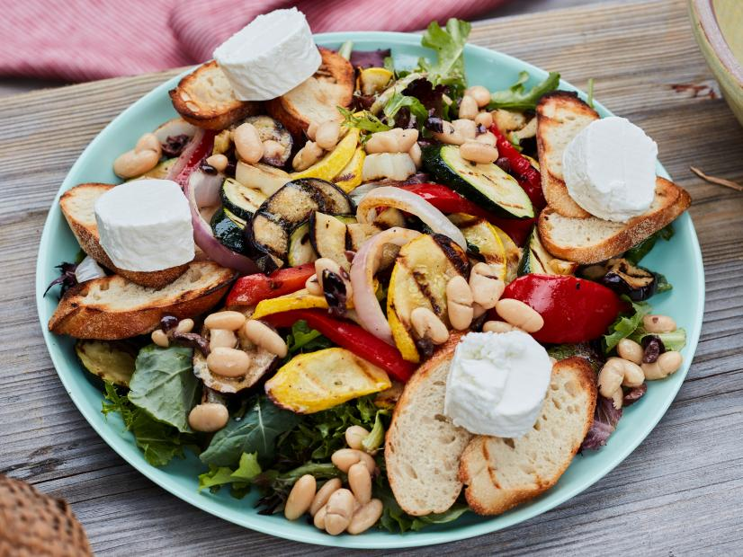

Summer Dinner Salad

- 3 tablespoons red wine vinegar
- 2 teaspoons Dijon mustard
- Kosher salt and freshly ground black pepper
- 6 tablespoons extra-virgin olive oil, plus more for brushing
- One 15 1/2-ounce can cannellini beans, rinsed and drained
- 1/4 cup pitted black olives, such as Niçoise, coarsely chopped
- 1 medium red bell pepper, sides removed in 4 planks
- 1 medium zucchini (about 8 ounces), cut on the bias into 1/4-inch-thick slices
- 1 medium yellow squash (about 8 ounces), cut on the bias into 1/4-inch-thick slices
- 1 small Italian eggplant (about 8 ounces), sliced 1/4-inch thick
- 1 medium red onion, sliced into 1/2-inch-thick rings
- 1 tablespoon rosemary leaves, finely chopped
- Eight 1/2-inch-thick slices baguette
- 6 ounces goat cheese, cut into 4 rounds
- 8 cups loosely packed mixed baby greens
- Prepare a grill for medium heat.
- Whisk the vinegar, mustard, 1/2 teaspoon salt and several grinds of black pepper together in a large serving bowl. Whisk in the oil to make a smooth dressing. Remove about 2 tablespoons of the dressing to a small bowl. Add the beans and olives to the serving bowl and toss well. Let marinate while you grill the vegetables.
- Spread the peppers, zucchini, yellow squash, eggplant and onion on a baking sheet. Season with salt and black pepper. Stir the rosemary into the dressing in the small bowl and brush on the vegetables. Grill the vegetables, turning occasionally, until charred on both sides and just tender, 8 to 9 minutes for the onions, 7 to 8 minutes for the eggplant and peppers and 5 to 6 minutes for the zucchini and yellow squash.
- Transfer the vegetables as they're cooked to a cutting board. Cut the peppers into thick strips. If the eggplant slices are large, cut them in half. Separate the onion into individual rings.
- Grill the baguette slices, turning occasionally, until crisp on the edges and slightly charred, 3 to 4 minutes. Remove from the grill and lightly brush with olive oil on both sides. Season with salt and black pepper. While the baguette grills, place the goat cheese rounds on a piece of foil and warm them on the grill just until the cheese begins to soften, 1 to 2 minutes.
- Add the grilled vegetables and mixed greens to the serving bowl and toss to combine. Arrange the baguette toasts around the bowl in pairs and top each pair with a round of warmed goat cheese.